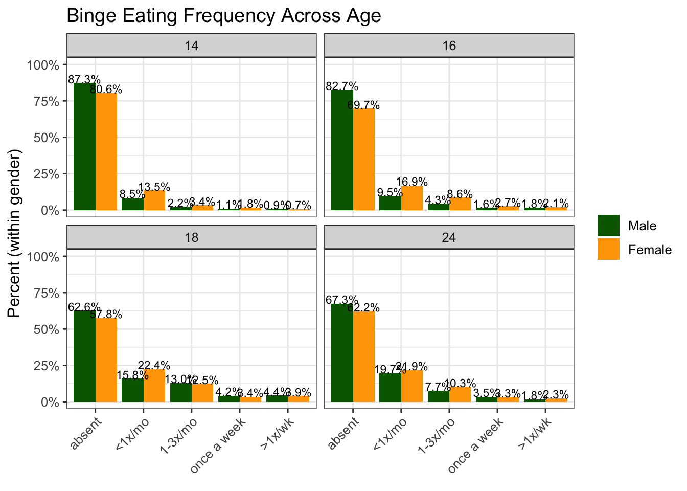
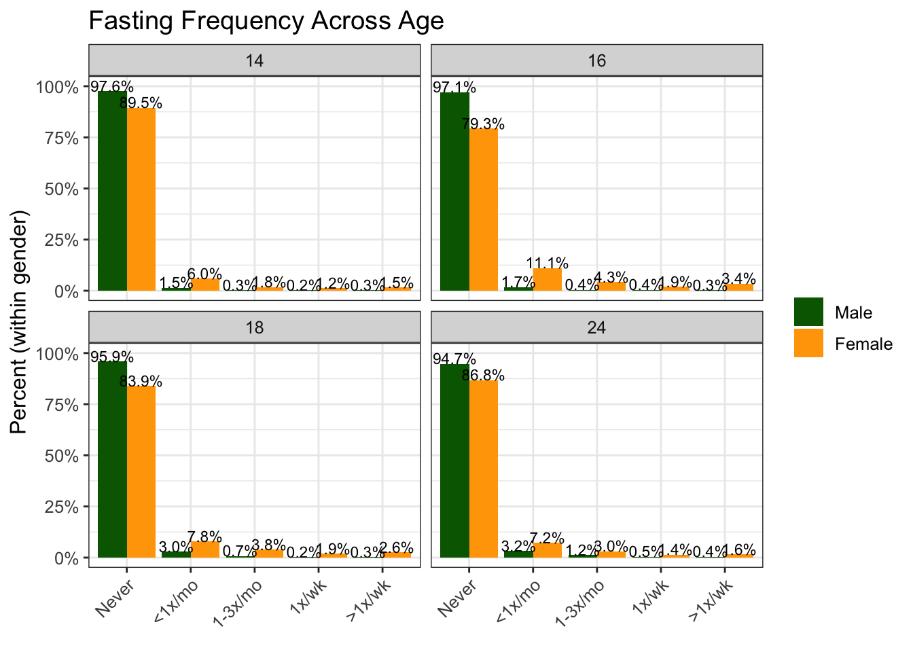
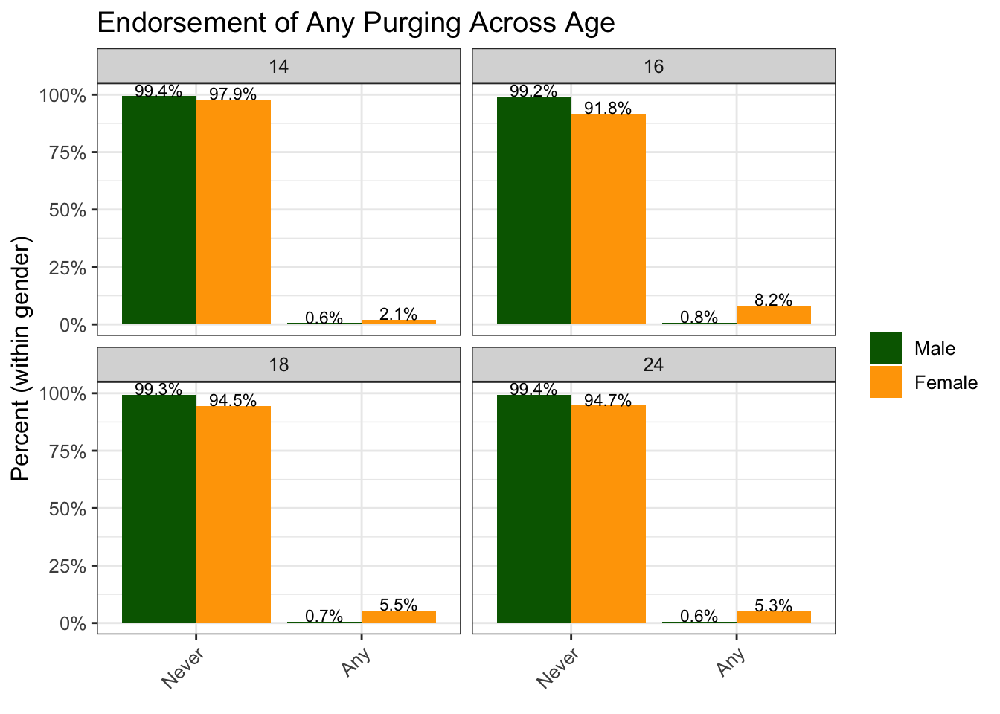

Chapter 5 Eating Disorder Behaivors - Descriptive Analyses
5.1 Binge Eating
Overall, it appears that the frequency of self reported binge eating increases from ages 14-18 across both genders, staying roughly stable between ages 18 and 24.

5.2 Fasting
Fasting behavior seems to be relatively stable across ages, with a possible peak at age 16 amongst females (20.7% of girls reporting fasting at age 16, with about 10% of girls reporting fasting at least once per month at age 16) and slow increase over time amongst males.

5.3 Purging
Because purging is a low frequency behavior, particularly amongst boys, we collapsed purging to being ‘never’ present or ‘any’ purging present (laxative use OR vomiting) across age. Rates of purging remain low (0.6-0.8%) amongst boys, with an increase from age 14 to age 16 in girls (8.2% at age 16), before falling to ~5% at ages 18 and 24.
